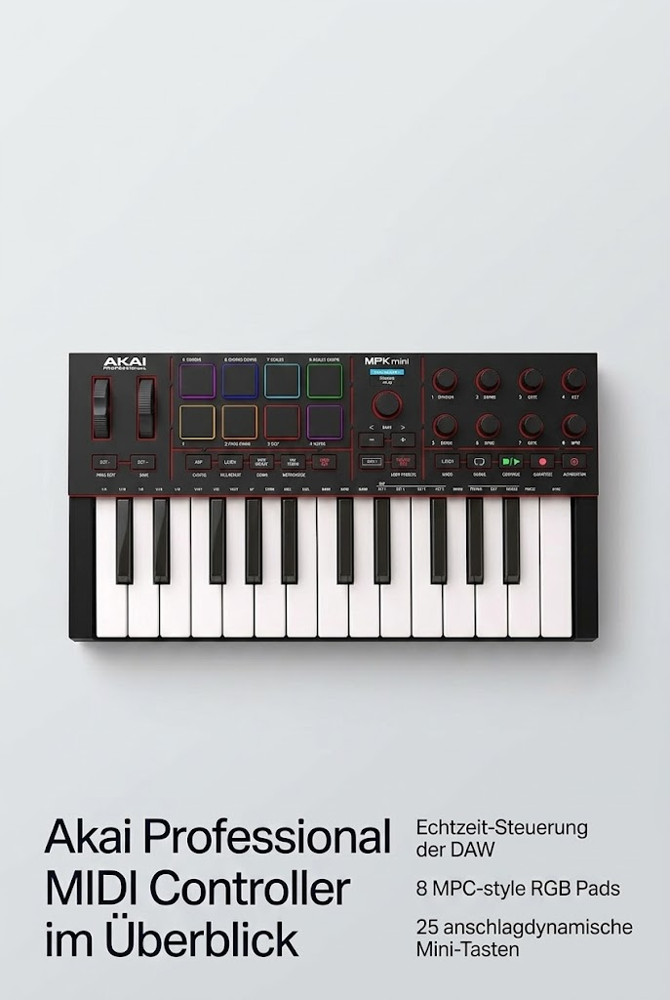

Akai Professional MPK Mini IV USB-C MIDI Keyboard Controller
Akai Professional
Akai Professional MPK Mini IV USB-C MIDI Keyboard Controller, Schwarz

Angaben des Herstellers
- Musikproduktion und Beat Maker der nächsten Generation - USB-betriebener MIDI-Keyboard-Controller mit 25 anschlagdynamischen Mini-Tasten, optimiert für Studio- oder Beat-Produktion, Performance im Piano-Stil, Synth-Leads, Sample-Triggering
- Echtzeitsteuerung und -navigation - 8 zuweisbare 360°-Regler, ein lebendiger Vollfarbbildschirm und ein Drück-/Dreh-Encoder für den praktischen Zugriff auf Einstellungen, Voreinstellungen und DAW-Funktionen, ohne dass Sie nach einem Computer greifen müssen
- Kultige MPC-Pads mit RGB-Feedback - 8 anschlag- und druckempfindliche MPC-Pads bieten ein kultiges Finger-Drumming-Erlebnis sowie dynamisches visuelles Feedback passend zu Ihrer Performance im Studio oder unterwegs
- Studio Instrument Collection inklusive - Eine leistungsstarke VST/AU- und eigenständige virtuelle Suite mit über 1000 professionellen Drums, Keyboards, Synthesizern, Bässen, FX von AIR, Akai Pro und Moog sowie integrierten MPK Mini IV-Bedienelementen
- Vorkonfigurierte DAW-Integration - Beginnen Sie in weniger als 15 Minuten mit der Produktion mit Ableton Live Lite 12, Logic Pro, FL Studio und mehr; verfügt über einen erweiterten DAW-zugeordneten Transportbereich für einen unterbrechungsfreien Workflow
- Erweiterte Performance-Tools - Arpeggiator mit Pattern-, Freeze- und Mutate-Funktionen sowie Akkord- und Skalenmodi, um schnell neue musikalische Ideen zu entwickeln, ideal für Songwriting und Live-Jaming
- Tragbarer Pro-Controller mit Verbindung zu allem - Leicht und langlebig mit USB-C-Konnektivität über USB 3.0-Anschluss, MIDI-Ausgang in voller Größe und Plug-and-Play-Betrieb für Mac-, PC- und Mobil-Setups; kein Aufwand, keine Adapter, keine Grenzen
- Plug-and-Play-Software und Lerntools inklusive - Anfänger und Profis, die sofortige Ergebnisse wollen, erhalten eine 30-tägige Melodics-Testversion für Keyboard- und Pad-Unterricht und 2 Monate Splice für lizenzfreie Loops und Samples
Werbung. Diese Seite enthält Partnerlinks: Als Amazon-Partner verdiene ich an qualifizierten Käufen. Für dich ändert sich nichts am Preis. Preise und Verfügbarkeit stehen bei Amazon und ändern sich laufend.